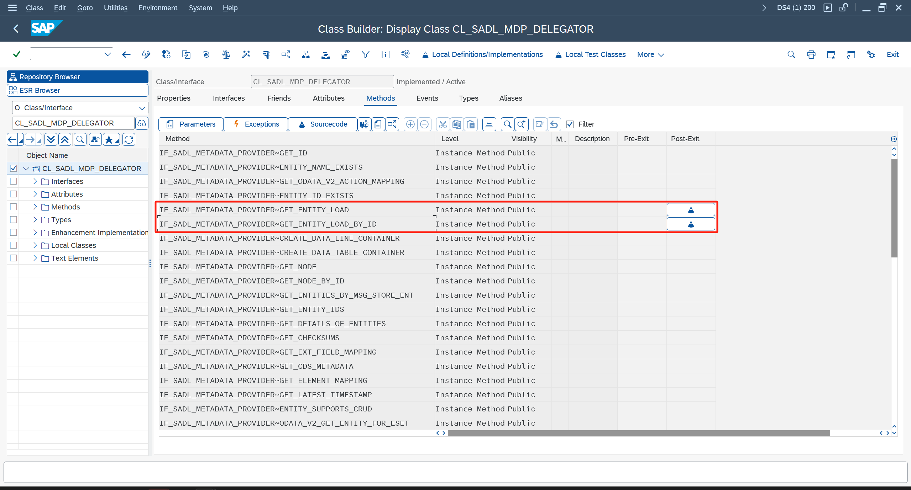

Fiori开发文档¶
Fiori内容繁多，该文档只针对项目上实际遇到的问题进行分析，并提供个人的解决方案。
对于零基础，可以先按官方文档学习方案入门。
Fiori开发最重要的一点，就是学会查阅官方文档，大部分基础问题，都可以从文档中找到解答。
后端¶
后端主要问题是查询，下面也仅讲解查询。
工具类¶
项目上总结的一套工具，后续都将使用该工具的代码辅助说明：
-
LCL_OSQL_VISTR，为上面的本地类
聚合查询增强¶
先说下聚合查询，也就是使用了Aggregation注解的CDS，在导入ODATA服务后，系统会自动创建一个ID字段，并在查询的时候，对每条记录生成唯一的ID值。
如果要重写聚合查询，须考虑ID值的处理。
ID值包括了还原该行数据必要的内容：分组条件，筛选条件，排序条件。因此，只要能根据ID值，在GetEntity方法中还原对应行取值，就是可行的。根据这种思路，缓存每次的查询结果是一种可选的方法。
更极端一点，不考虑GetEntity还原取值，那么只需要给ID值分配随机值即可。
权衡之下，项目选择对齐标准，因此通过增强来复用标准处理。
首先在类 ZCL_ODATA_HELPER 中定义全局参数 GT_BUSINESS_KEY ，然后对类 CL_SADL_MDP_DELEGATOR 的两方法 GET_ENTITY_LOAD / GET_ENTITY_LOAD_BY_ID ，实施Post-Exit增强： 
增强内加入下面代码：
" 用于计算ID值
IF zcl_odata_helper=>gt_business_key IS NOT INITIAL.
rr_entity_load->query_options-business_key = zcl_odata_helper=>gt_business_key.
ENDIF.
最后在代码中调用自定义的 ZCL_ODATA_HELPER=>FILL_ANALYTICAL_IDS 方法处理：
" 后端很奇怪的不能获取注解，因此要手工指定聚合列
DATA lt_measure TYPE zcl_odata_helper=>gty_measure_t.
lt_measure = VALUE #(
function = zcl_odata_helper=>cns_aggregation_type-sum
( property = to_upper( 'AMOUNT' ) )
).
" 填充ID值
zcl_odata_helper=>fill_analytical_ids(
EXPORTING
i_tech_request_context = io_tech_request_context
i_dpc = if_sadl_gw_dpc_util~get_dpc( )
i_measures = lt_measure
CHANGING
c_data = et_entityset ).
封装查询结果处理¶
项目中遇到复杂查询，需要重写GET_ENTITYSET方法，同时也必须要考虑分组，排序，分页这三种情况，因为都是重复代码，所以封装成下面这套模板代码进行处理：
" 对于后付值，前端传入的筛选条件会影响初步查询，需要先去除
DATA lt_remove TYPE stringtab.
lt_remove = VALUE #(
( to_upper( cns_field-field1 ) )
).
" 取WHERE语句
DATA(lv_osql) = zcl_acc_odata_helper=>get_osql(
i_tech_request_context = io_tech_request_context
i_removes = lt_remove ).
" 初步查询
SELECT *
FROM zcds001
WHERE (lv_osql)
INTO CORRESPONDING FIELDS OF TABLE @et_entityset.
IF sy-subrc <> 0.
es_response_context-inlinecount = 0.
RETURN.
ENDIF.
" TODO，其他处理
" 二次筛选
zcl_acc_odata_helper=>filter(
EXPORTING
i_tech_request_context = io_tech_request_context
i_property = to_upper( cns_field-field1 )
i_iniital_value = space " 保留空值
CHANGING
c_entityset = et_entityset ).
* " 对于分析视图，需要传入聚合列
* DATA lt_measure TYPE zcl_odata_helper=>gty_measure_t.
* lt_measure = VALUE #(
* function = zcl_odata_helper=>cns_aggregation_type-sum
* ( property = to_upper( cns_field-field2 ) )
* ).
" 聚合，排序，分页，以及填充ID值
zcl_acc_odata_helper=>after_get_entityset(
EXPORTING
i_tech_request_context = io_tech_request_context
i_dpc = if_sadl_gw_dpc_util~get_dpc( )
* i_measures = lt_measure
CHANGING
c_data = et_entityset
c_response_context = es_response_context
).
前端¶
前端问题比较零碎，并没有能影响到实施的核心问题，因此本节主要对常见需求，以及基于这些需求封装出来的工具，进行说明。
通用¶
Common.js，该工具依赖于controller，需要在onInit方法中初始化，功能包括：i18n取值，导航，加锁解锁（主要是功能前后要求转圈等待）。
// 初始化，写在Controller的onInit方法上，或其他能传入controller的地方也行
Common.init(this);
// i18n取值
Common.i18n.getText("demo");
// 跳转App内页面，填写Router里的ID
Common.navTo("PageID");
Common.navBack();
// 加锁解锁
Common.lock();
Common.unlock();
消息处理¶
Message.js，该工具封装标准的MessageBox，改为异步处理。
// show/success/error/waring/confirm/toast
Message.show("").then(function (){
// todo
});
// 特殊定制
var sAction1 = "Action1";
var sAction2 = "Action2";
var sAction3 = sap.m.MessageBox.Action.CLOSE;
Message.showMsgAsync(("Text"), "confirm", [
sAction1, sAction2, sAction3
]).then(function (sAction) {
switch (sAction) {
case sAction1: break;
case sAction2: break;
case sAction3: break;
default: break;
}
});
// 展示报错列表
var aDatas = [{
Key: "Demo",
Mtype: "E",
Msg: "Demo"
}]
Message.showMsgTable({
data: aDatas,
messageItem: {
type: "{= ${Mtype} === 'E' ? 'Error' : 'Success'}",
title: "{Key}",
subtitle: "{Msg}"
}
}).then(function () {
// todo
})
ODATA处理¶
Service.js，该工具主要将ODATA改为异步处理，同时加入等待逻辑，异常处理逻辑。
// 查询
Service.read(oDataModel, "/", {
filters: [],
sorters: [],
urlParameters: {
$top: 1
}
}).then(function (oData) {
// todo
});
说到ODATA，还得说下功能处理，下面是我所使用的方案。
首先创建一个DeepEntity的CDS：
define view entity ZCDS001
as select from demo_ddic_types
association [0..1] to ZCDS001A as _Head on 1 = 1
association [*] to ZCDS001B as _Item on 1 = 1
association [*] to ZCDS001C as _Msg on 1 = 1
{
key abap.string'' as Action,
_Head,
_Item,
_Msg
}
导入ODATA后，重写 /IWBEP/IF_MGW_APPL_SRV_RUNTIME~CREATE_DEEP_ENTITY 方法：
" 通常我会将再套一层，以防止修改ODATA的时候丢失代码
DATA(lo_backend) = NEW zcl_backend( ).
" 后端类新建GS_DATA，用于接收入参
io_data_provider->read_entry_data( IMPORTING es_data = lo_backend->gs_data ).
" 入参中有Action字段，用于处理不同功能，该类调用Execute方法即可
lo_backend->execute( ).
" 返回处理结果
copy_data_to_ref(
EXPORTING
is_data = lo_backend->gs_data
CHANGING
cr_data = er_deep_entity ).
前端调用如下：
// 功能处理
var oRequestData = {
Action: "Demo",
to_Head: {},
to_Item: [],
to_Msg: []
};
Service.request(oDataModel, "/ZCDS001", oRequestData).then(function (oData) {
// todo
});
搜索帮助处理¶
ValueHelper.js，该工具封装搜索帮助处理。
var that = this;
ValueHelper.openAsync({
controller: that,
model: that._oDataModel,
entitySet: "",
filterData: {},
valueHelpDialog: {
key: "",
descriptionKey: "",
title: "",
supportMultiselect: false
}
}).then(function (oParamaters) {
var oItem = oParamaters.aSelectedItems[0];
// todo
})
弹窗处理¶
DialogHelper.js，该工具封装弹窗处理。
var that = this;
DialogHelper.open({
controller: that,
fragment: "XXXX.view.fragment.XXXX",
ok: function () {
// todo
},
dialog: {
title: "Demo"
}
});
SmartTable处理¶
SmartTableHelper.js，该工具封装SmartTable常用处理。
// 获取SmartTable控件
var oSmartTable = this.byId("");
// eachColumns，常用于初始化时对列进行额外处理
SmartTableHelper.eachColumns(oSmartTable, function (oColumn, sColumnKey) {
// todo
})
// getSelected，读取勾选行信息
// 常用于功能处理中，获取表格数据作为入参
var oSelected = SmartTableHelper.getSelected(oSmartTable, {deleteMetedata: true});